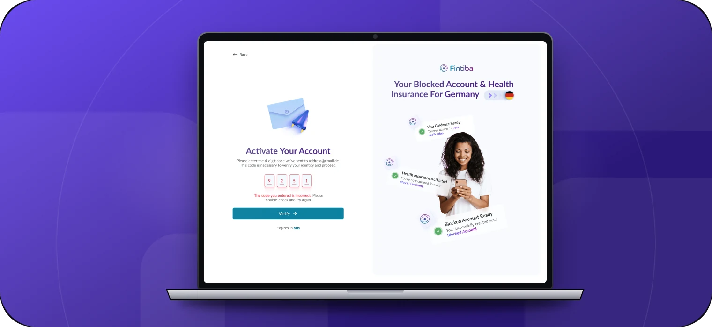
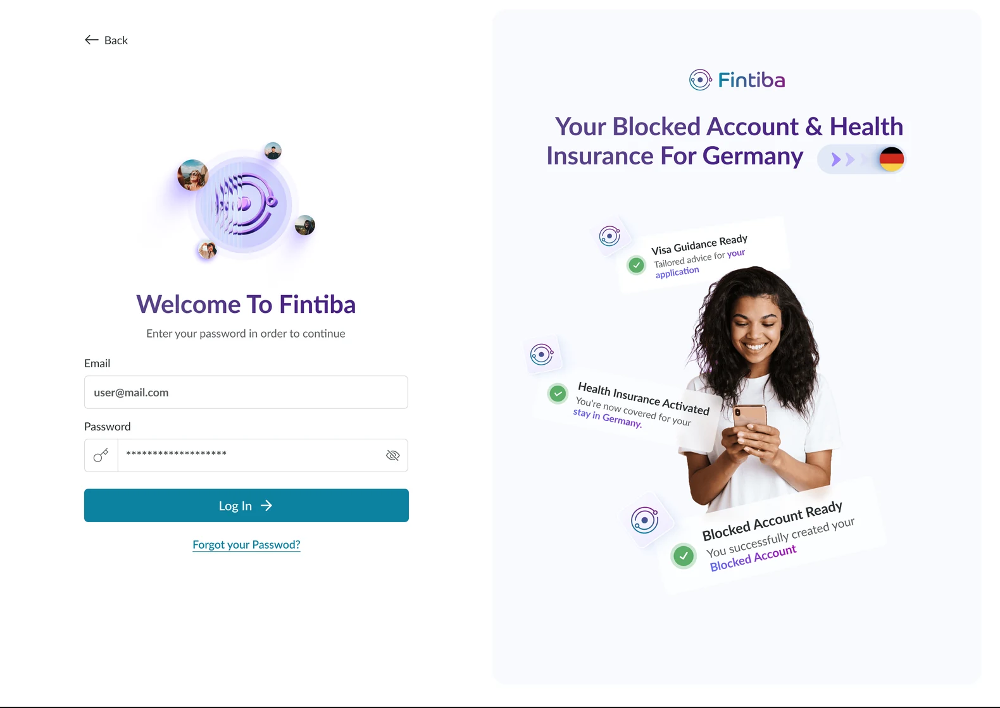
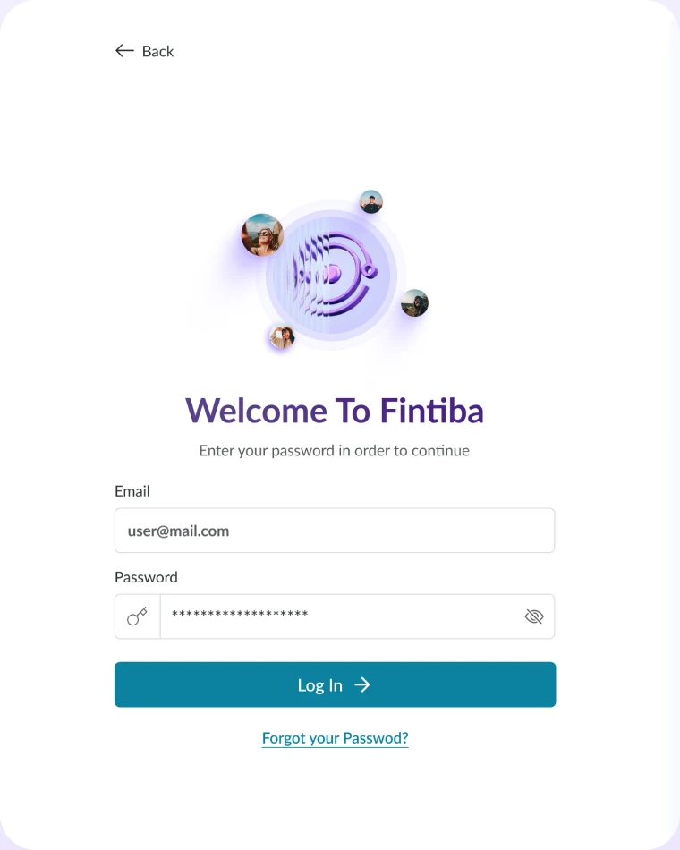
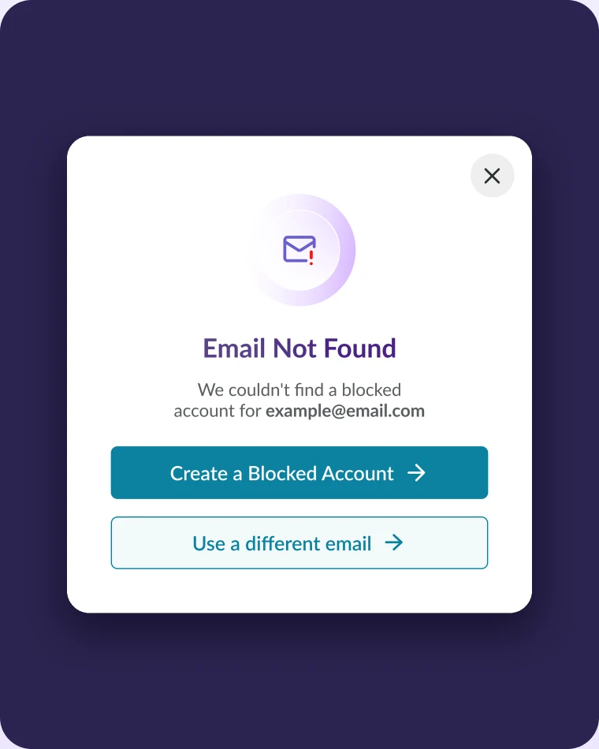
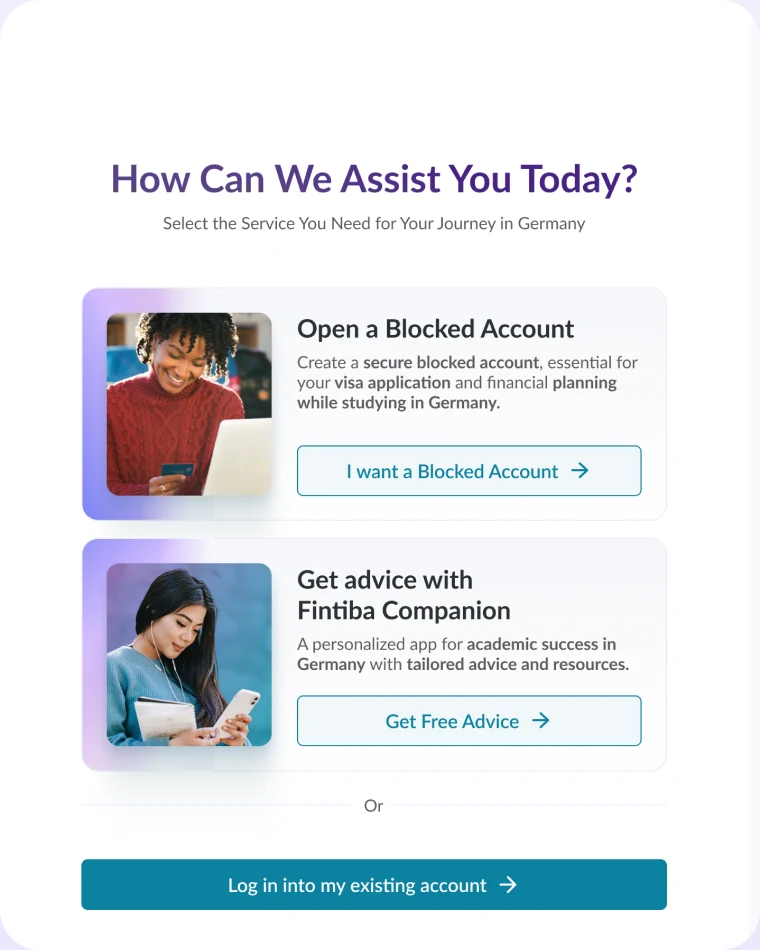

Флоу с тупиками
Новый пользователь регистрировался и оставался без следующего шага, а часть сценариев не была описана. Это снижало конверсию.
- ✕Нет входа через Google
- ✕Нет перехода в обязательный онбординг
- ✕Ошибки и восстановление пароля не описаны
Без тупиков для каждого статуса аккаунта
Листайте к флоу
О проекте
Fintiba — финансовая платформа для переезда в Германию: блокированный счёт, страховка, а в дальнейшем и открытие банковского счёта. Я спроектировала новый флоу входа и регистрации для веба и мобильного приложения.
Команда
Вела дизайн всего флоу для веба и мобильного приложения, включая ошибки и восстановление пароля. Сеньор-дизайнер и продакт-оунер ревьюили решения. Проект сделан до появления дизайн-системы, поэтому экраны в прежнем визуальном стиле продукта.
Ключевые изменения
Вход через Google и понятные ошибки — два главных изменения, которые убрали тупики на входе.



Нет аккаунта: выбор услуги → Blocked Account и онбординг
Новый пользователь регистрировался и оставался без следующего шага, а часть сценариев не была описана. Это снижало конверсию.
Флоу ведёт по одному из трёх путей в зависимости от статуса аккаунта — для веба и мобильного приложения.
 1
1
 2
2
 3
3
Листайте карточки вбок →
После ввода email или входа через Google система проверяет аккаунт и ведёт пользователя по одному из трёх путей. Модалка «Email не найден» — ключевая развилка: из неё новый пользователь сразу попадает в обязательный онбординг.
Ключевые решения
Убрали барьер регистрации: один клик вместо заполнения формы
Новый пользователь сразу попадает в обязательный флоу открытия счёта — раньше это был тупик
Ошибки, восстановление пароля, email не найден — все состояния прописаны и задокументированы для разработки

Каждое состояние флоу продумано: основной путь, подтверждение кодом, ошибки и модалка «Email не найден», которая ведёт в онбординг. Продукт англоязычный, поэтому экраны на английском.





Вход, который ведёт дальше,
а не обрывается на ошибке.
Те же сценарии в нативном приложении: выбор услуги для нового пользователя и подтверждение аккаунта кодом из письма с повторной отправкой.

По одному пути на каждый статус аккаунта.
Одинаковые для веба и приложения, в вебе плюс hover-состояния.
Веб и нативное приложение.
V1–V3 поэтапно, V4 — полная версия.
Главный вывод
Флоу внедряли поэтапно: версии V1–V3 для разработки по шагам, V4 — полная версия со всеми сценариями и состояниями ошибок.